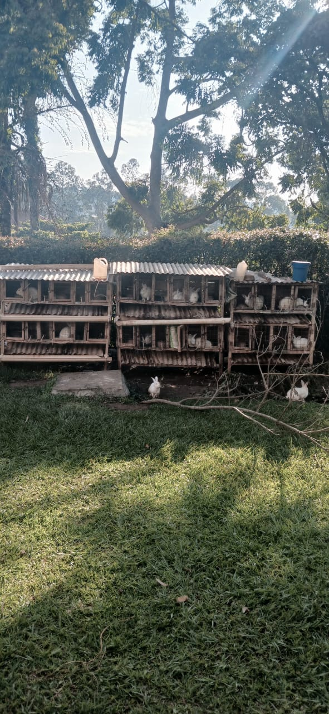
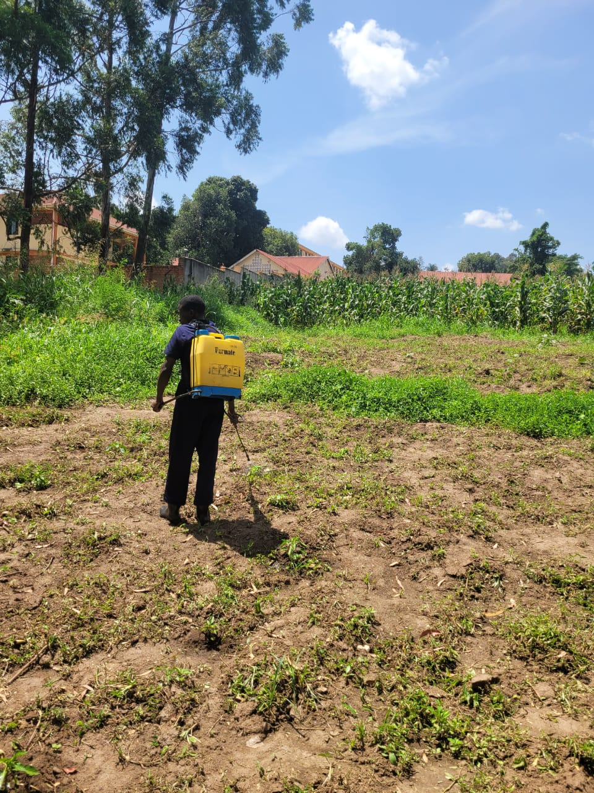
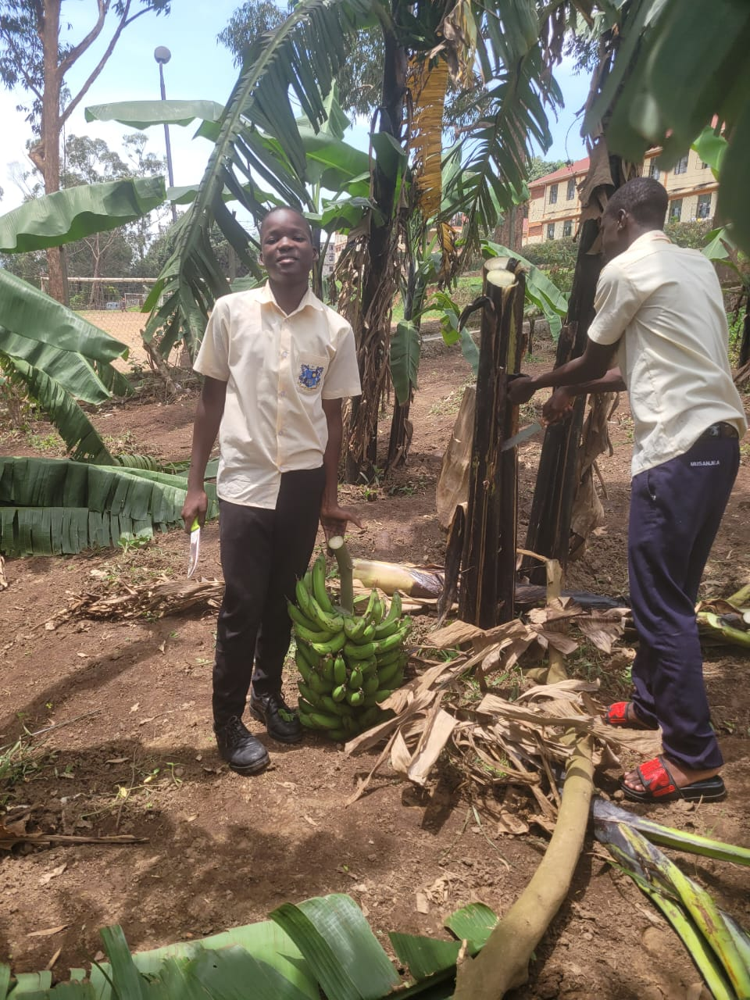

Agriculture team
Checks crops, availability, quantities and farming information.
STUDENTS · AGRICULTURE · TECHNOLOGY
Learners working together to connect our school farm with the community.



OUR PURPOSE
This project brings together agriculture and digital skills. Learners gather accurate information about the farm, prepare product descriptions, build web pages and practise communicating with potential buyers.
Checks crops, availability, quantities and farming information.
Builds the pages with HTML, CSS and Bootstrap.
Writes clear descriptions and checks spelling and accuracy.
Tests contact details and explains how buyers can enquire.
We are a passionate team of students working together to grow fresh produce, promote sustainable agriculture and create a greener future.

Club Patron
Leader, passionate about crop production, teamwork and sustainable farming practices.

Student Mukulu
Passionate about crop production, teamwork and sustainable farming practices.

Agriculture Team
Passionate about crop production, teamwork and sustainable farming practices.

Agriculture Team
Passionate about crop production, teamwork and sustainable farming practices.

Production Team
Committed to improving farm productivity and maintaining fresh, quality produce.

Farm Projects
Enjoys practical agricultural projects and finding creative solutions to farming challenges.

Farm Operations
Helps coordinate daily farm activities and supports the team's agricultural goals.

Marketing Team
Interested in connecting customers with fresh produce from our school farm.

Team Coordination
Values organisation, cooperation and helping every member contribute to the project.

Quality & Care
Promotes careful handling of farm produce and responsible agricultural practices.

Innovation Team
Explores new ideas to make farming and selling agricultural products easier.

Community Outreach
Builds relationships with customers and promotes our school's agricultural project.